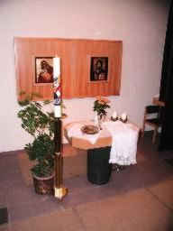
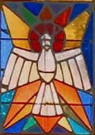
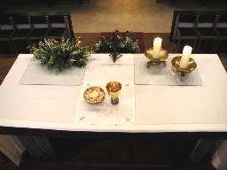
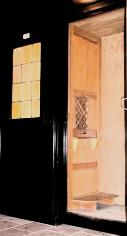
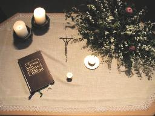
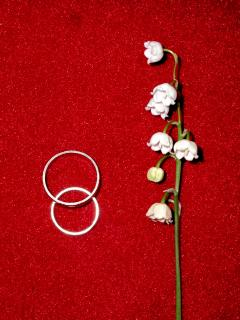
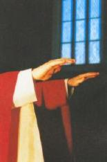

Sakramente sind für uns Menschen sichtbare und wirksame Zeichen der Liebe Gottes zu uns. In ihnen können wir die Nähe Gottes mit all unseren Sinnen spürbar erleben, wenn wir dafür offen sind. Jedes Sakrament wird in der Gemeinschaft der Glaubenden (Kirche) gefeiert. Damit wird deutlich ausgedrückt, dass diese Gemeinschaft für den Menschen da ist.
Die Sakramente sind uns Menschen geschenkt, damit unser Leben gelingen kann und wir mit der Hilfe Gottes stets rechnen können. Sie sind als Angebot und nicht als Pflichtvorschrift zu verstehen.
Die nachfolgende Zusammenstellung soll Sie kurz darüber
informieren, welche Bedeutung den
einzelnen Sakramenten zukommt und wie man sie in unserer Pfarre empfangen
kann.
TAUFE
Im Sakrament der Taufe sagt Gott sein unwiderrufliches „JA“ zu uns Menschen. Als Eltern äußern Sie den Wunsch, dass Ihr Kind in die Gemeinschaft der Gläubigen (Kirche) aufgenommen werden soll und sorgen mit, dass es im Geiste Christi und seiner Kirche erzogen wird.
Wenn Sie Ihr Kind taufen lassen möchten, so kommen Sie bitte spätestens drei Wochen vor Ihrem geplanten Tauftermin zur Anmeldung in die Pfarrkanzlei, Unterwagramer Straße 48.
Zu dieser Taufanmeldung ist an Dokumenten mitzubringen:
Geburtsurkunde des Kindes
Meldezettel des Kindes
wenn Eltern kirchlich verheiratet:
kirchlicher Trauungsschein
ansonsten:
staatliche Heiratsurkunde (wenn verheiratet)
Taufschein der Eltern
Der Taufspender wird mit Ihnen rechtzeitig ein vorbereitendes Gespräch führen, bei dem die Tauffeier besprochen und Sie Ihre Vorstellungen und Wünsche bezüglich dieser einbringen mögen.
Einmal im Jahr gibt es eine gemeinsame Kindersegnung für die Neugetauften in der Kirche.

FIRMUNG
Im Sakrament der Firmung wird der/die Jugendliche gestärkt zu einem christlichen Leben in der Welt von heute. Es soll seine/ihre Entscheidung sein, ein Leben mit Gott und seiner Kirche zu führen.
EUCHARISTIE
Die sonntägliche Eucharistiefeier ist „Gipfel und Quelle“
eines christlichen Lebens. Gemeinsam mit anderen Gläubigen wird dabei Tod und
Auferstehung Jesu Christi gefeiert (Samstag 18.00 Uhr ab Oktober bis Beginn der Sommerzeit bzw.
18.30 Uhr im Sommer, Sonntag um 9.30 Uhr).
Ab der 2. Schulstufe besteht die Möglichkeit, die Heilige Kommunion zum ersten Mal zu empfangen.
Krankenkommunion:Sind Sie oder jemand aus Ihrer Familie oder Ihrem Bekanntenkreis krank und möchten die Heilige Kommunion empfangen, so verständigen Sie uns bitte in der Pfarrkanzlei (Tel.: 0 27 42 / 25 31 63).
BUßSAKRAMENT - FEIER DER VERSÖHNUNG
Wenn Sie selbst die Befreiung von Schuld und Belastungen in Ihrem Leben erfahren möchten, so wird Ihnen im Empfang des Bußsakramentes die Vergebung und Aufrichtung durch Gottes Barmherzigkeit zugesprochen.
Pfarrer i.R. Karl Permoser steht Ihnen jeden Samstag und Sonntag jeweils 1/2 Stunde vor Beginn der Messfeier in der Kirche zur Verfügung. Sie können auch jederzeit persönlich mit dem Pfarrer einen Termin vereinbaren.
Ab der 4. Schulstufe gibt es die Möglichkeit dass auch Ihr Kind im Sakrament der Buße Versöhnung von seinen Schulderfahrungen erfährt und so lernt Schuld positiv zu bewältigen.
KRANKENSALBUNG
Wenn Sie selbst, oder jemand aus Ihrer Familie schwer krank ist und Kraft und Trost braucht, so rufen Sie bitte in der Pfarrkanzlei an (Tel.: 0 27 42 / 25 31 63). Es wird dann mit Ihnen ein Besuchstermin mit dem Herrn Pfarrer vereinbart.
Für die Spendung der Krankensalbung können Sie im Krankenzimmer einen Tisch mit Tischtuch, Kreuz, Kerzen und Blumenschmuck dafür vorbereiten.
Der Transport und die Begleitung wird, wenn nötig, von pfarrlichen Helfern gerne angeboten.
Bitte melden Sie sich, oder Ihren Angehörigen ca. 2 Wochen vor dem Krankentag in der Pfarrkanzlei. (Tel.: 0 27 42 / 25 31 63).
EHE
Im Sakrament der Ehe wird die Liebe zwischen Mann und Frau zu einem Heiligen Bund, der Abbild der nie erlöschenden Liebe Gottes zu uns Menschen sein soll.
Wenn Sie heiraten möchten, so kommen Sie ca. 3 Monate vor Ihrem geplanten Hochzeitstermin in die Pfarrkanzlei, Unterwagramer Straße 48.
Zur Trauungsanmeldung bringen Sie bitte mit:
Taufscheine der Ehepartner
Meldezettel der Ehepartner
schriftliche Angabe von:
Berufe der Ehepartner
Name der Trauzeugen
Wohnadresse der Trauzeugen
Berufe der Trauzeugen.
Es wird dann mit Ihnen rechtzeitig ein Termin für ein Trauungsgespräch mit dem Pfarrer oder Diakon vereinbart und die Hochzeitsfeier besprochen, wobei Sie Ihre diesbezüglichen Vorstellungen und Wünsche einbringen mögen.

WEIHE
Gott ruft auch heute noch Menschen in seine Nachfolge, um anderen Menschen in ganz besonderer Weise zu dienen, das Wort Gottes zu verkünden und die Sakramente zu feiern. Jeder Gläubige ist aufgerufen diese große Sorge um Berufungen durch das Gebet und einer positive Einstellung zu einer solchen Berufsentscheidung mitzutragen.
Wenn Sie selbst, oder jemand aus Ihrer Familie den Wunsch in sich spürt ein Diakon oder Priester zu werden, dann nehmen Sie bitte Kontakt mit einem der Seelsorger auf. Er wird gemeinsam mit Ihnen die weiteren Schritte Ihrer Berufung besprechen.